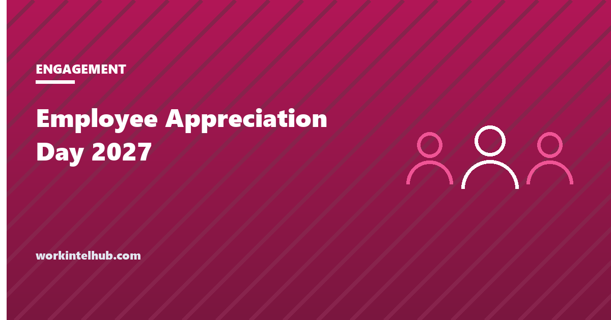

Employee Appreciation Day 2027

Employee Appreciation Day falls on the first Friday of March. In 2027 that is Friday, March 5. It is not a public holiday and nobody is required to do anything, which is why the companies that mark it well stand out: it is the one day of the year with a built-in excuse to tell people, specifically, what they did that mattered. The companies that mark it badly also stand out, usually with a pizza lunch in a year when the raise budget was cut, and the day's reputation for hollowness comes entirely from them.
The countdown and idea picker below cover the planning. The rest of the page gives the dates through 2030, the evidence on why specific recognition works and generic gestures do not, how to run the day for offices, remote teams and shift floors, and the short list of things to avoid.
Countdown and idea picker
Every idea assumes the one rule that makes recognition work: name the specific thing the person did. A generic thank-you on the day is noticed less than its absence.
The dates
| Year | Employee Appreciation Day | Notes |
|---|---|---|
| 2027 | Friday, March 5 | Plan in February; the picker's reminder date is two weeks out |
| 2028 | Friday, March 3 | |
| 2029 | Friday, March 2 | |
| 2030 | Friday, March 1 | The earliest it can fall |
The day was started in 1995 by Bob Nelson, a workplace author, and Workman Publishing, and has no official standing. That matters only in one way: there is no obligation, so whatever is done reads as a choice. The federal holidays 2027 page has the days that are actually off.
Why specific beats generic
Gallup's research on recognition is consistent across years: employees who receive recognition that is frequent, specific and from someone they value (the manager first) are several times more likely to be engaged, and those who do not are about twice as likely to say they will leave within the year. Only about one in three US employees strongly agree they were recognised in the past week. The finding that applies to this day in particular is that the most memorable recognition names the work: not "thanks for everything" but "the way you handled the March outage is why the customer renewed".
A day of recognition therefore works to the extent that it carries specifics, which is why the first idea in the picker, a handwritten note from each manager naming one thing each person did, outperforms everything with a bigger budget. The recognition ideas page has the year-round version and the rules; the engagement ideas page the broader programme.
Running the day
- Start with the notes. Ask every manager, three weeks out, for one sentence per direct report naming a specific contribution. Collect them, check that none are generic, and have them handwritten or at least individually sent. This is the day. Everything else is decoration.
- Make it even across settings. Office staff get lunch; remote staff get a delivery credit the same day; shift staff get a visit from the site lead at the start of every shift, including nights. A day that reaches only the people near the kitchen creates the resentment it was meant to prevent.
- Leaders do something visible. Covering the support queue for an hour or serving the lunch says more than a video, though a short video naming teams and work is the remote equivalent.
- Cash through payroll, and say so. Spot bonuses and gift cards are taxable wages; a $50 card that arrives as $37 net with no warning is a complaint, not a thank-you. The employee cost calculator includes the employer's share.
- Close the loop. Ask one question in the next pulse survey: did you feel recognised for specific work this month? That number, not the lunch headcount, is the measure.
What not to do
- A gesture in a bad year. If raises were frozen, layoffs happened or the bonus was cut, a party reads as tone-deaf. Do the notes, skip the party, and say plainly what the company can and cannot do this year.
- Generic thanks at scale. The all-company email thanking everyone for their hard work recognises no one.
- Making people perform. Mandatory fun, forced public speeches and awards nobody voted for.
- Recognition as a substitute for the review. The day does not replace the performance conversation or the pay decision; it sits beside them.
- One day a year. The research is about weekly recognition. A company that does the notes well in March and nothing in April has learned the wrong lesson.
Key takeaways
- Employee Appreciation Day 2027 is Friday, March 5; it is the first Friday of March every year (March 3 in 2028, March 2 in 2029, March 1 in 2030).
- Specific recognition works; generic gestures do not. One sentence per person from their manager, naming the work, is the whole day.
- Reach every setting equally: office, remote and every shift including nights.
- Cash and gift cards are taxable wages; pay through payroll and say so.
- Skip the party in a bad year, never force participation, and treat the day as a reminder to recognise weekly, not a substitute.
Frequently asked questions
When is Employee Appreciation Day 2027?
Friday, March 5, 2027. It falls on the first Friday of March every year: March 3 in 2028, March 2 in 2029 and March 1 in 2030. It is not a public holiday.
What is Employee Appreciation Day?
An unofficial observance started in 1995 by workplace author Bob Nelson and Workman Publishing to prompt employers to recognise their staff. There is no legal or official status, which means whatever an employer does is a choice rather than an obligation.
What are good Employee Appreciation Day ideas?
A handwritten note from each manager naming one specific thing each person did; an early finish announced that morning; leaders covering the front line for an hour; a peer thank-you wall; breakfast or lunch with managers serving and a delivery credit for remote staff; small gift cards with a named reason; an extra paid day off. The picker on this page filters sixteen ideas by budget and setting.
How do you include remote and shift employees?
Give remote staff a meal credit on the same day as the office lunch and a short leadership video that names teams and work. Have the site lead visit every shift in person, including nights, and give shift staff the same notes and the same gifts. A day that only reaches the office creates resentment.
Are Employee Appreciation Day gifts taxable?
Cash and gift cards are taxable wages and go through payroll with withholding. Low-value non-cash items given occasionally, such as a meal or a small gift, can fall under the de minimis fringe benefit exclusion. Tell employees before a bonus arrives net of tax.
Is it worth doing Employee Appreciation Day at all?
If it carries specific recognition, yes: the research on recognition shows large effects on engagement and intent to stay, and the day is a built-in prompt. If it is a pizza lunch with a generic email, it does slight harm. In a year of freezes or layoffs, do the notes and skip the celebration.